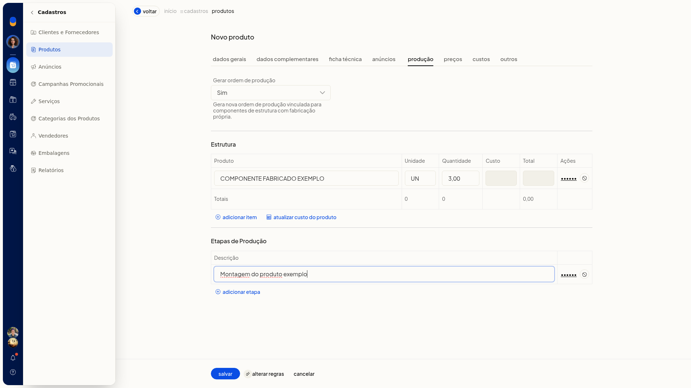

Cadastrar um produto fabricado e montar a estrutura
No ERP da Olist, você cadastra um produto do tipo Fabricado e monta a estrutura de produção com insumos que já existem no cadastro. A estrutura lista esses insumos para a produção do produto.
O cadastro fica em Cadastros > Produtos.
Pré-requisitos
- Os insumos da estrutura precisam já existir como produtos.
Importante
- A estrutura aceita no máximo 200 produtos. Ao atingir o limite, a ficha mostra Não é possível incluir mais de 200 produtos na estrutura.
Instruções
-
Acesse Cadastros > Produtos.
-
Clique em Incluir produto.
-
Em Tipo do Produto, selecione Fabricado.
-
Preencha os dados gerais do produto.
-
Abra a aba de produção e monte a estrutura com os componentes já cadastrados. A estrutura fica limitada a 200 produtos.

Resultado
A estrutura do produto fabricado aparece na aba de produção, com os insumos informados.